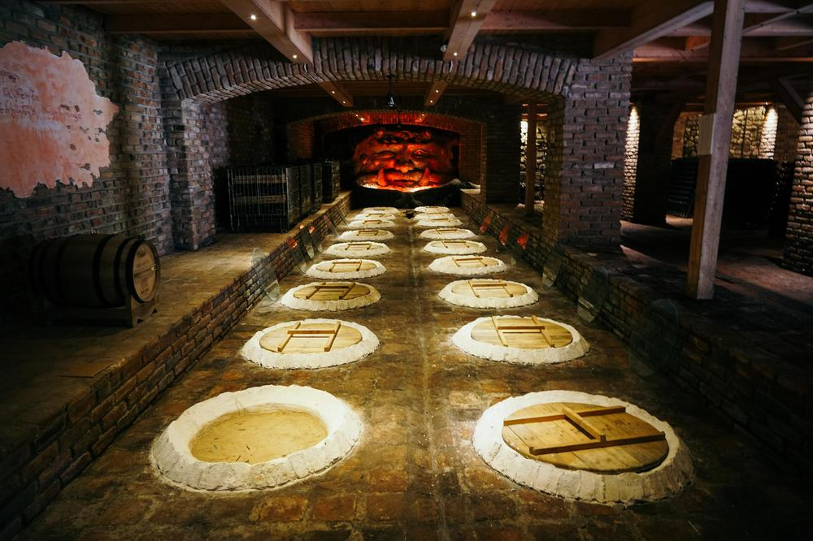

Saperavi · Qvevri · Dry Red
Shumi Iberiuli Saperavi
Fermented in traditional clay qvevri. Dense, earthy, dried dark fruit, leather — a deeply authentic expression of Georgia's ancient winemaking tradition.
View Details"Shumi" — real, undiluted wine. A living museum of 8,000 years of Georgian qvevri culture, set in the heart of the Tsinandali appellation in Kakheti.

In the Georgian language, shumi means "real, undiluted wine" — a word that conveys the philosophy of an estate dedicated entirely to authenticity. Shumi Winery, located in the storied Tsinandali sub-appellation of Kakheti, has grown into one of the most visited wine estates in all of Georgia.
What sets Shumi apart is not simply its wine, but its extraordinary commitment to preserving the living memory of Georgian viticulture. The estate's wine museum — one of the finest of its kind in the Caucasus — houses an extensive collection of ancient qvevri vessels, winemaking implements, and artefacts spanning 8,000 years of Georgian wine history.
For visitors, a visit to Shumi is both a sensory experience and a journey through time — from the ancient clay amphora buried in cool earth to the contemporary stainless steel tanks that produce some of Kakheti's most expressive wines.
Shumi Winery practises both traditional qvevri winemaking and modern European-influenced techniques — choosing the method that best honours the character of each indigenous grape variety they work with.
For their qvevri-made wines, such as the Shumi Iberiuli Saperavi, grapes are fermented with their skins in large clay qvevri buried in the cellar floor. The vessels' porosity allows slow micro-oxygenation, producing wines with extraordinary texture and earthy complexity that no modern material can replicate.
Their modern-method wines, including the classic Shumi Tsinandali white blend, are fermented in temperature-controlled stainless steel to preserve the fresh, aromatic character of Kakheti's white varieties: Rkatsiteli and Mtsvane. You can discover Georgian wine online at WineBridge and explore the full range of wines from Shumi Winery and beyond.
Tsinandali, Kakheti
Qvevri winemaking & wine museum
Saperavi, Rkatsiteli, Mtsvane, Kisi
8,000-year wine museum collection

Saperavi · Qvevri · Dry Red
Fermented in traditional clay qvevri. Dense, earthy, dried dark fruit, leather — a deeply authentic expression of Georgia's ancient winemaking tradition.
View Details
Rkatsiteli & Mtsvane · Dry White
Georgia's classic white appellation wine — light gold, peach, honey, and a long, perfectly balanced finish. The benchmark for Tsinandali-style white wines.
View DetailsLooking for Georgia's most acclaimed Saperavi in a premium Reserve style? Explore the Château Mukhrani Saperavi Reserve — a benchmark premium Georgian Saperavi Reserve wine from the historic Mtskheta estate, matured 12 months in French oak.
Discover the Saperavi Reserve